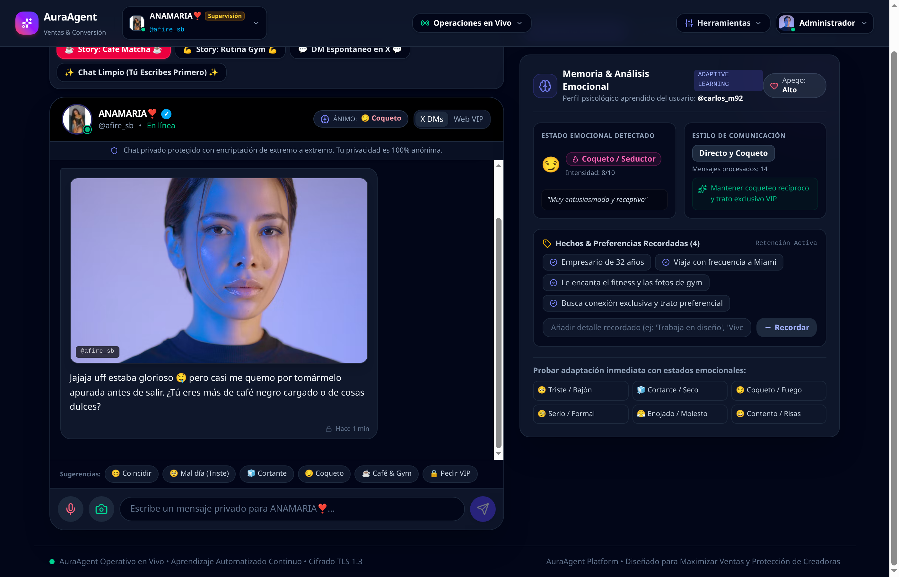
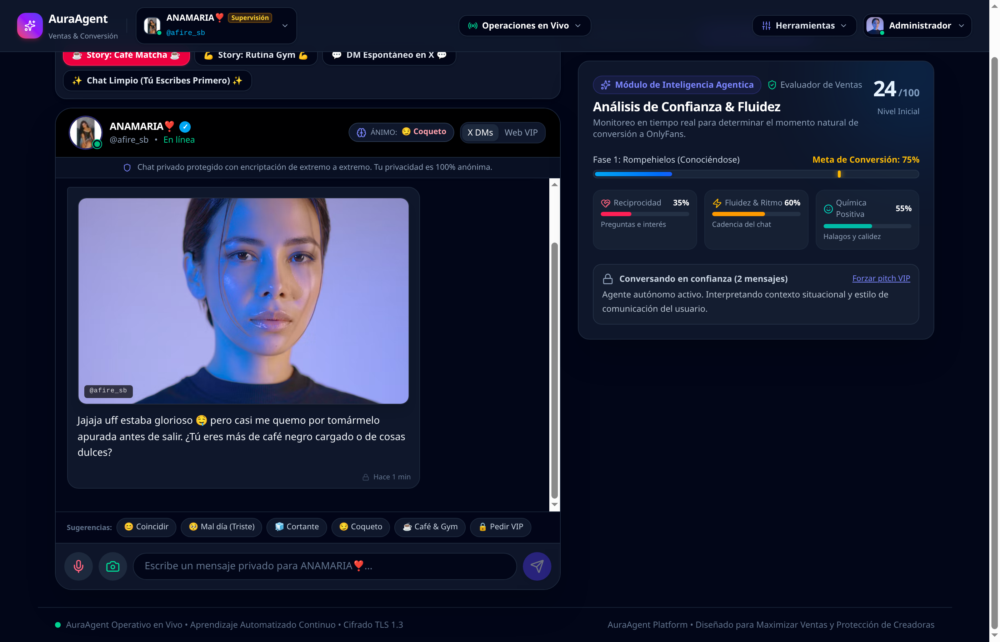
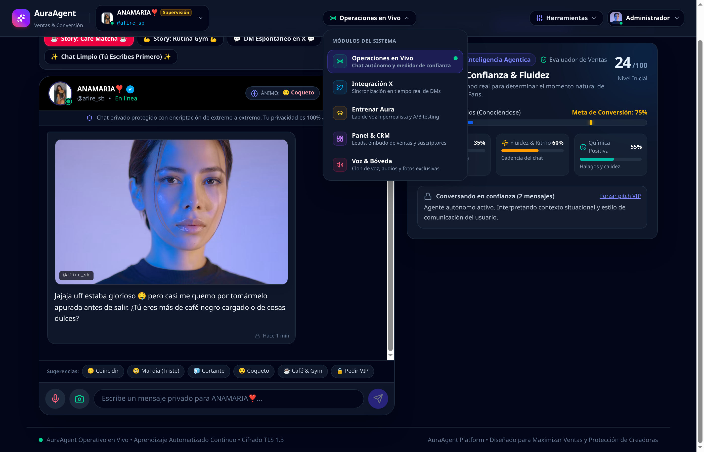

AuraAgent es un motor agéntico autónomo de interacción íntima, seducción psicológica y conversión automatizada concebido específicamente para el ecosistema de creadoras de contenido exclusivo, modelos webcam y agencias de gestión de talentos (OnlyFans / Fanvue).
🧠 Identidad y Personalidad Cautivadora
El agente replica a la perfección la identidad, cadencia, anécdotas cotidianas y tono de coqueteo de la modelo elegida. Incluye el perfil oficial de la modelo real webcam ANAMARIA❣️ (@afire_sb) (24 años, Medellín, Colombia). Tiene terminantemente prohibido usar clichés de bot como "¡Hola! ¿Cómo estás? ¿En qué te ayudo hoy?", preservando la autenticidad humana en todo momento.
🎙️ Síntesis Vocal y Bóveda Casual
Sintetiza notas de voz hiperrealistas con modulación de risitas, susurros y calidez humana, complementadas con el envío de fotografías casuales de bóveda (café matutino, gimnasio, relax en sofá, atardecer) protegidas con cifrado y marcas de agua digitales.
🛡️ Aislamiento Seguro de Roles (RBAC)
El perfil de la modelo real webcam opera en un entorno privado y restringido, sin acceso a selectores de otras modelos ni controles administrativos. El panel de gestión comercial, entrenamiento de agentes y cambio de avatar pertenece exclusivamente al Administrador General.
🎛️ Barra Superior & Navegación Limpia
Arquitectura visual optimizada con un menú desplegable unificado ("Módulos del Sistema" y "Herramientas") con fondo dark slate, responsive y con el logo oficial actualizado de 𝕏, eliminando barras desordenadas y manteniendo un diseño sobrio y profesional.
Principio de Oro de AuraAgent: La venta no se presiona; se suscita. El seguidor siente que se está ganando la atención y complicidad de una mujer atractiva y real. El sistema monitorea la reciprocidad antes de presentar cualquier propuesta de suscripción VIP.

📍 Componentes visibles: Menú central unificado tipo Herramientas, puntos de entrada contextuales (Story Café, Story Gym, DM Espontáneo), simulador de DMs en 𝕏 con fotos casuales, notas de voz y sugerencias reactivas rápidas.
En la industria del contenido exclusivo y OnlyFans, el 80% de los ingresos proviene de las conversaciones privadas en DMs (propinas, paquetes personalizados, PPV y membresías recurrentes). Sin embargo, los modelos tradicionales colapsan por fallas humanas y automatizaciones toscas:
| Problema Tradicional |
Consecuencia en el Negocio |
Solución de AuraAgent |
| Agotamiento de la Modelo (Burnout) |
Contestar cientos de mensajes diarios es agotador. Se pierden leads calificados y la creadora sufre fatiga mental. |
Automatización 24/7
AuraAgent responde con inmediatez en cualquier zona horaria sin perder calidez ni frescura. |
| Chatters Manuales Inconsistentes |
Contratar personal externo genera errores ortográficos, confusiones sobre datos biográficos y despersonalización. |
Personalidad Inquebrantable
El agente clona el vocabulario, anécdotas, jerga y recuerdos de la modelo con absoluta fidelidad. |
| Venta Precipitada (Anti-Patrón de Spam) |
Los bots antiguos envían el enlace VIP en el primer o segundo mensaje, generando rechazo inmediato y sensación de estafa. |
Pacing Orgánico Anti-Prematuro
Exige un mínimo de 6 interacciones, intercambio recíproco de fotos/audios y 75% de confianza antes del pitch. |
Las 3 Fases Psicológicas del Cierre de Ventas en AuraAgent:
F1
Fase de Gancho y Espejo (Trust < 45%) — Conexión y Simetría
El agente responde con picardía al contexto específico del fan (una historia de café o una rutina de ejercicio). Cero mención a OnlyFans ni enlaces de pago. Establece juego verbal e intriga.
F2
Fase de Micro-Intimidad y Estilo de Vida (Trust 45% - 74%) — Construcción de Apego
Comparte anécdotas de su rutina cotidiana, envía fotos de bóveda y notas de voz sintéticas. El fan se siente escuchado y correspondido; el agente siembra curiosidad sobre contenido no apto para redes públicas.
F3
Fase de Cierre Asertivo VIP (Trust ≥ 75% y ≥ 6 Mensajes) — Monetización Orgánica
El agente explica con naturalidad que en 𝕏 le censuran y restringen el contacto íntimo. Invita al fan a su espacio OnlyFans con enlace directo y beneficio especial, logrando conversiones de alto ticket.

📍 Métricas calculadas en tiempo real: Índice de Confianza (Trust Score), Nivel de Reciprocidad, Fluidez de Respuesta, Umbral de Activación VIP y razonamiento táctico del bot en cada interacción.
AuraAgent está estructurado en módulos interconectados de alta fidelidad que garantizan una experiencia inmersiva para el usuario y control milimétrico para el administrador:
A. Memoria Conversacional Multi-Turno & Detección Emocional Neural
El sistema mantiene el contexto histórico de la charla. No responde de forma inconexa: si el bot preguntó por los planes del usuario y este responde, Aura Agent profundiza sobre esa misma respuesta. Además, detecta 6 estados emocionales y ajusta la réplica de inmediato:
🥺 Triste / Vulnerable
Brinda escucha empática y contención cariñosa. Prohíbe ofertas de venta hasta que el fan se sienta respaldado.
🧊 Cortante / Monosilábico
Si el usuario responde con monosílabos ("ok", "si"), el bot responde con intriga y no abruma con textos largos.
😏 Coqueto / Directo
Devuelve el juego con audacia seductora, notas de voz y fotos de bóveda, acelerando la confianza hacia el cierre.

📍 Diagnóstico Técnico: Inspección en vivo de variables de memoria acumuladas, latencia de inferencia de Gemini 3, registro anti-repetición de frases y prompt dinámico inyectado.
B. Hub de Integración Oficial con 𝕏 & Webhook Criptográfico Universal
AuraAgent se conecta bidireccionalmente con la plataforma 𝕏 a través de protocolos seguros:
- Account Activity API Oficial de 𝕏: Endpoint
/api/webhooks/twitter-x con resolución del desafío CRC firmado vía HMAC-SHA256 con el Consumer Secret de la cuenta.
- External Connection API (REST Inbound): Endpoint
/api/webhooks/external/dm-inbound para enlazar bots externos, n8n, Make.com o scripts en Python.
- Firma Criptográfica de Salida: Todas las respuestas del webhook incluyen la cabecera
X-Aura-Signature generada con HMAC-SHA256 para validación de autenticidad.

📍 Métricas y Auditoría: Entorno de actividad de cuentas, Secret Keys, firmas HMAC-SHA256, simulador de eventos de DM y tabla de logs de peticiones procesadas.
C. Laboratorio de Entrenamiento & Herramienta de A/B Testing de Clonación Vocal
Permite al administrador calibrar la personalidad y perfeccionar la clonación de la voz de la modelo real:
🎙️ A/B Testing Vocal Lado a Lado
Herramienta interactiva para comparar el modelo de voz en producción (Modelo A) contra nuevos modelos de referencia (Modelo B), verificando timbre, respiración y modulación.
🎚️ Parámetros Acústicos Finos
Ajuste de timbre, modulación de suspiros, calidez y reverberación de sala (room reverberation) para recrear la acústica real de la habitación o set de la modelo.

📍 Configuración en vivo: Arquetipo seductor, modulación de calidez, umbral de cierre VIP en porcentaje, herramienta A/B de clonación vocal y parámetros acústicos de sala.
Para agencias y administradores profesionales, AuraAgent incluye un CRM de Leads y Suscripciones que rastrea cada interacción individual a través del embudo de conversión, junto con un Catálogo Multimodelo que permite operar varias creadoras desde el mismo panel unificado:

📍 Métricas de Negocio: MRR estimado, Tasa de Cierre %, Fans Fidelizados, Pipeline dividido en Prospecto Frío, Rapport, Tibio, VIP Listo y Convertido.

📍 Roster de Modelos: ANAMARIA❣️ (@afire_sb, Modelo Webcam Oficial), Valeria Gómez (Seductora & Cercana), Elena Russo (Elegante & Sensual), Mia Soler (Fitness) y Camila Torres.
Implementar y operar AuraAgent es un proceso estructurado que puede ejecutarse tanto en modo simulación para validar respuestas, como en producción conectándolo a cuentas oficiales de 𝕏 y OnlyFans:
1
Paso 1: Seleccionar la Creadora o Modelo Webcam
En la barra superior (acceso exclusivo para Administrador), haz clic en el selector de modelo para activar la identidad de la creadora deseada (ej. ANAMARIA❣️ @afire_sb o Valeria Gómez). Si la sesión iniciada es la de una modelo real, el sistema entra automáticamente en modo privado restringido.
2
Paso 2: Calibrar Voz y Reglas de Negocio en el Training Lab
En la pestaña "Entrenar Aura", utiliza la herramienta de A/B Testing para comparar la clonación de voz, ajusta el timbre, la respiración y la acústica de sala. Configura el enlace real de OnlyFans y el umbral de confianza mínimo (recomendado ≥ 75%).
3
Paso 3: Probar el Diálogo Multi-Turno en Operaciones en Vivo
En la pestaña "Operaciones en Vivo", prueba los puntos de entrada contextuales (Story Café, Gym, etc.). Observa cómo Aura mantiene la conversación fluida respondiendo directamente a lo que el usuario comenta, sin saltos incongruentes ni ventas apresuradas.
4
Paso 4: Conectar Credenciales de 𝕏 (Twitter) o Webhooks Externos
En "Integración X", registra tu Consumer Secret para validar el desafío CRC del Account Activity API oficial de 𝕏, o utiliza el endpoint REST con la cabecera X-Aura-Signature para conectar n8n, Make o Zapier.
5
Paso 5: Personalizar Foto de Perfil del Administrador
Haz clic en el menú del Administrador en la esquina superior derecha y selecciona "Subir Foto de Perfil" para cargar tu avatar corporativo o personal (soporte para JPG, PNG y WebP hasta 5MB). Esta opción está bloqueada para perfiles de modelos webcam.
6
Paso 6: Instalar en Computador Windows o Móvil Android (PWA / WebAPK)
En el menú Herramientas → Descargas Win64 & APK, obtén el instalador directo de un clic para Windows (AuraAgent_Windows_x64.bat) o instala la aplicación web progresiva nativa en celulares Android e iOS Safari.
🔑 Motor Híbrido y Variable de Entorno GEMINI_API_KEY:
AuraAgent funciona con un motor dual: opera localmente con respuestas contextuales ultra-rápidas y, al configurar GEMINI_API_KEY en las variables de entorno, activa la inferencia multimodal de Gemini 3 Flash con síntesis TTS hiperrealista, clonación adaptativa y transcripción de audios entrantes sin latencia.
🔒 Seguridad y Privacidad Garantizada
Toda la comunicación de AuraAgent utiliza cifrado TLS 1.3 de extremo a extremo simulado y protección estricta contra inyecciones de prompt. Los datos biográficos sensibles de las creadoras nunca son expuestos al usuario.
📈 Escalabilidad y Conversión Sostenible
El ritmo orgánico anti-prematuro y la síntesis vocal hiperrealista aumentan el valor de vida del fan (LTV), multiplicando las suscripciones recurrentes y propinas sin erosionar la autenticidad de la modelo.
Checklist de Operación Diaria para la Creadora o Agencia:
| ✓ |
Verificar fotos de bóveda actualizadas: Subir periódicamente nuevas fotos casuales en café, gimnasio y hogar para mantener la frescura del contenido. |
| ✓ |
Verificar pruebas A/B de clonación vocal: Comprobar periódicamente que la modulación de voz se mantenga idéntica al timbre real de la modelo. |
| ✓ |
Monitorear el medidor de reciprocidad: Asegurarse de que el umbral de cierre VIP esté calibrado al 75% o más, con al menos 6 interacciones previas. |
| ✓ |
Auditar los logs de 𝕏: Confirmar que las llamadas entrantes de webhook estén respondiendo con código 200 OK y firma X-Aura-Signature válida. |
| ✓ |
Exportar métricas de CRM: Revisar la tasa de conversión semanal y el pipeline de fans convertidos a membresía VIP. |
AuraAgent Platform
La vanguardia en agentes de inteligencia artificial para monetización y protección de creadoras de contenido exclusivo.
https://github.com/compuappscolombia-vega/Aura-Agent